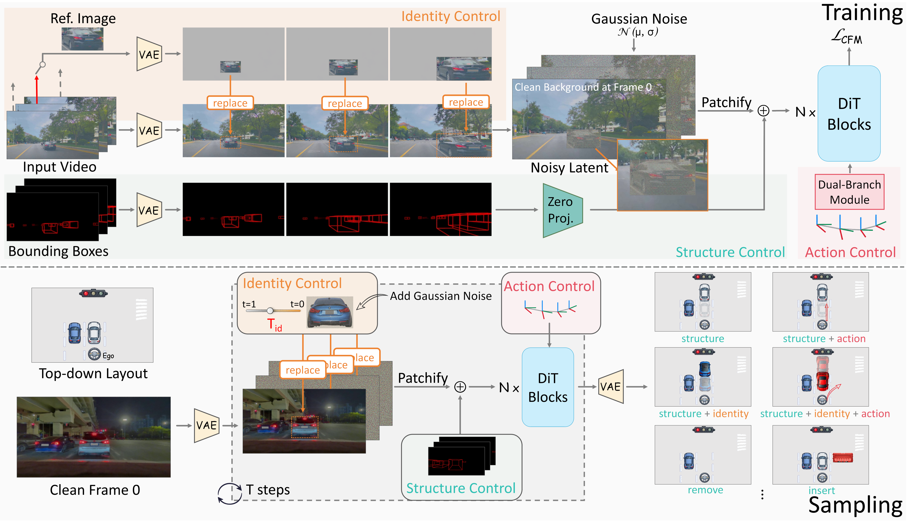

Abstract
A major challenge in autonomous driving is the "long tail" of safety-critical edge cases, which often emerge from unusual combinations of common traffic elements. Synthesizing these scenarios is crucial, yet current controllable generative models provide incomplete or entangled guidance, preventing the independent manipulation of scene structure, object identity, and ego actions. We introduce CompoSIA, a compositional driving video simulator that disentangles these traffic factors, enabling fine-grained control over diverse adversarial driving scenarios. Extensive comparisons demonstrate superior controllable generation quality over state-of-the-art baselines, with a 17% improvement in FVD for identity editing and reductions of 30% and 47% in rotation and translation errors for action control. Furthermore, downstream stress-testing reveals substantial planner failures: across editing modalities, the average collision rate of 3s increases by 173%.

Overview of the CompoSIA framework. During training (top), structure, identity, and ego-action signals are explicitly decomposed and injected into a Flow Matching–based DiT backbone in a disentangled yet compositional manner. During sampling (bottom), different combinations of conditions enable controllable driving video generation, supporting multiple editing applications.
Structure Control
Right car cuts in
Front vehicle removed
Identity Control
Right bus to this ID
Left car to this ID
Action Control
Change to the left line
Go straight
Change to the left line
Compositional Control
Left car skids and Ego sudden stop
Front car starts, Object inserted and Ego starts
Left car cuts in and Ego stop
Front car starts, ID changed and Ego starts
Left car cuts in and Ego sudden stop
Front car starts and ID changed
Right car cuts in and Ego sudden stop
Front truck skids toward ego and ID changed
Front truck cuts in and ID changed
Ablations
(Left) Without action conditioning, the ego motion becomes unstable. (Right) Without structure conditioning, surrounding vehicles fail to maintain consistent motion and spatial alignment.
Ablations on identity conditioning. Earlier stopping (Tid = 0.6) increases generation freedom but reduces similarity to the reference image, whereas later stopping (Tid = 0.2) enforces stronger identity preservation but increasingly anchors the generation to the reference image.
BibTeX
@article{zhan2026composing,
title={Composing Driving Worlds through Disentangled Control for Adversarial Scenario Generation},
author={Zhan, Yifan and Chen, Zhengqing and Wang, Qingjie and He, Zhuo and Niu, Muyao and Guo, Xiaoyang and Yin, Wei and Ren, Weiqiang and Zhang, Qian and Zheng, Yinqiang},
journal={arXiv preprint arXiv:2603.12864},
year={2026}}